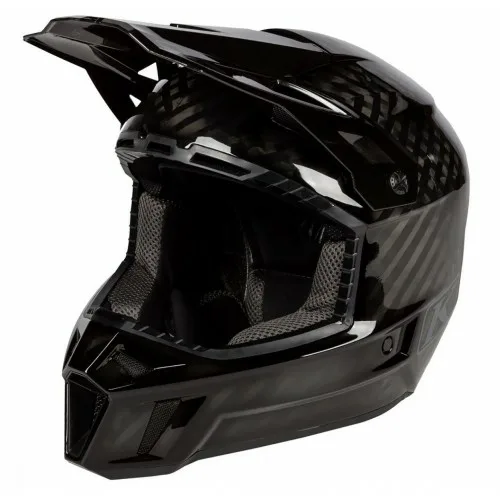
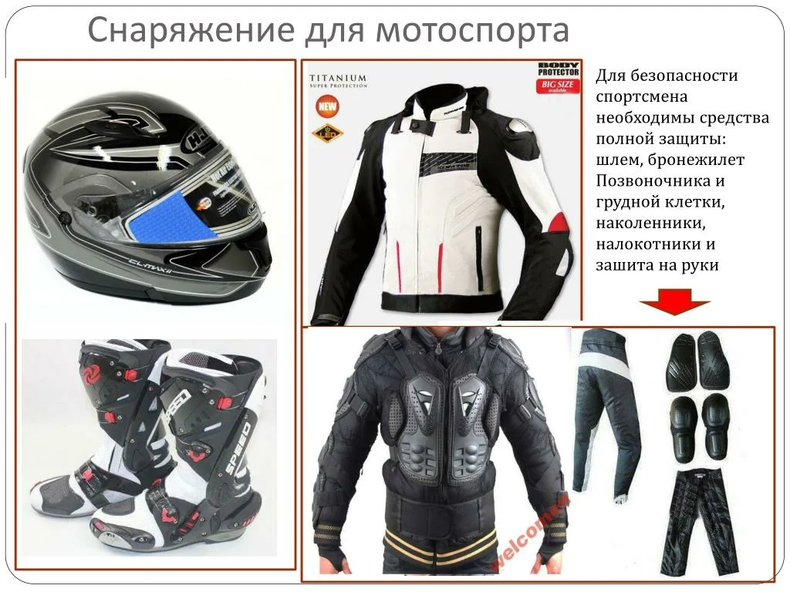

|
ENDURO WORLD
Всё о мотоциклах для бездорожья |
| Главная | История | Мотоциклы | Экипировка | Гонки | |
|
 |
| ЗАЩИТА РАЙДЕРА |

Эндуро — травмоопасный вид спорта. Падения на камни и ветки неизбежны. Правильная экипировка спасает жизнь. Ниже представлен список обязательного снаряжения каждого райдера, одобренный международными федерациями мотоспорта.